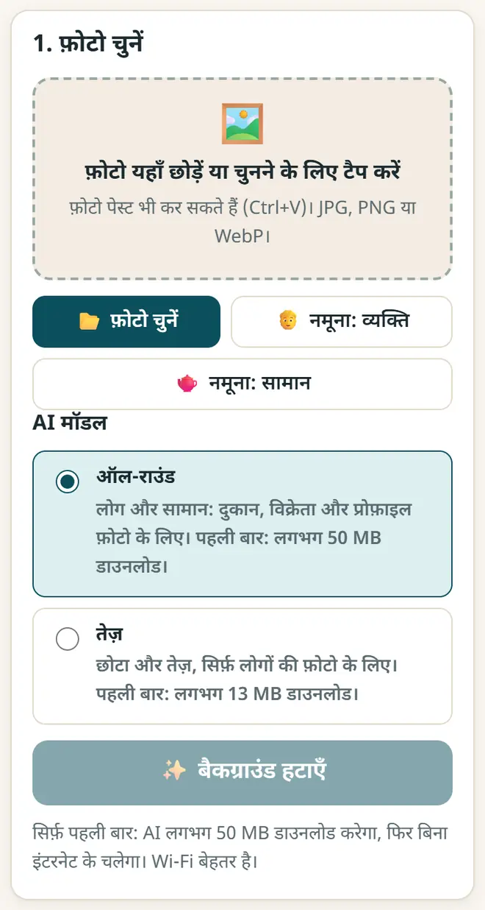
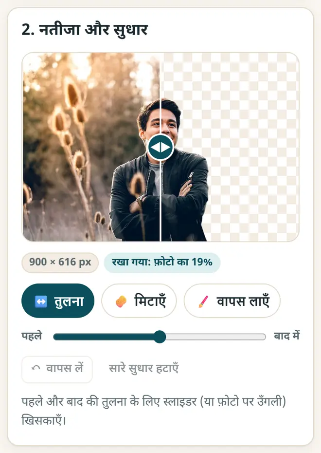

फ़ोटो का बैकग्राउंड मुफ़्त में और बिना अपलोड किए कैसे हटाएँ
कई बैकग्राउंड रिमूवर आपकी फ़ोटो अपने सर्वर पर भेजते हैं और पूरे साइज़ के लिए साइन-अप या पैसे माँगते हैं। यह टूल AI को आपके अपने फ़ोन या कंप्यूटर पर चलाता है, इसलिए फ़ोटो आपके पास ही रहती है।
छोटा जवाब
AI बैकग्राउंड रिमूवर खोलें, “फ़ोटो चुनें” और फिर “बैकग्राउंड हटाएँ” दबाएँ। पहली बार AI मॉडल एक बार डाउनलोड होता है (Wi-Fi बेहतर है)। छोटी ग़लतियाँ “मिटाएँ” और “वापस लाएँ” से ठीक करें, “पारदर्शी” या “सफ़ेद” जैसा बैकग्राउंड चुनें और “PNG डाउनलोड करें” या “JPG डाउनलोड करें” दबाएँ।
5 स्टेप में बैकग्राउंड हटाएँ
-
फ़ोटो चुनें
AI बैकग्राउंड रिमूवर खोलें और “फ़ोटो चुनें” दबाएँ। अच्छी रोशनी वाली साफ़ फ़ोटो, जिसमें व्यक्ति या चीज़ बैकग्राउंड से अलग दिखे, सबसे अच्छा नतीजा देती है।
-
AI मॉडल चुनें
“ऑल-राउंड” लोगों, प्रोडक्ट और पालतू जानवरों, सबके लिए चलता है। “तेज़” छोटा और तेज़ है, लेकिन सिर्फ़ लोगों की फ़ोटो के लिए। चुना हुआ मॉडल एक बार डाउनलोड होता है और फिर बिना इंटरनेट चलता है।

फ़ोटो और AI मॉडल चुनें, फिर बैकग्राउंड हटाएँ। -
बैकग्राउंड हटाएँ
“बैकग्राउंड हटाएँ” दबाएँ। फ़ोन पर इसमें एक मिनट तक लग सकता है। पहले और बाद का फ़र्क़ देखने के लिए “तुलना” इस्तेमाल करें।
-
किनारे ठीक करें
AI ने कुछ हिस्सा छोड़ दिया हो तो “मिटाएँ” चुनकर उस पर ब्रश फेरें। कुछ ग़लती से कट गया हो तो “वापस लाएँ” चुनकर उसे वापस ले आएँ। Undo आख़िरी स्ट्रोक वापस ले लेता है।

बैकग्राउंड हट गया: तुलना करें, ठीक करें और डाउनलोड करें। -
बैकग्राउंड चुनें और डाउनलोड करें
बैकग्राउंड में “पारदर्शी”, “सफ़ेद”, कोई रंग, ब्लर या अपनी फ़ोटो चुनें। साइज़ चुनें: प्रोफ़ाइल फ़ोटो के लिए “चौकोर DP” या ऑनलाइन दुकान की लिस्टिंग के लिए “प्रोडक्ट 1000 × 1000”। फिर “PNG डाउनलोड करें” (पारदर्शी बैकग्राउंड बना रहता है) या “JPG डाउनलोड करें” (छोटी फ़ाइल) दबाएँ।
काम की बातें
- पारदर्शी बैकग्राउंड चाहिए तो हमेशा PNG डाउनलोड करें। JPG में पारदर्शी हिस्से सफ़ेद हो जाते हैं।
- ऑनलाइन सामान बेचते हैं? चीज़ को किसी भी मेज़ पर रखकर फ़ोटो लें, फिर सफ़ेद बैकग्राउंड के साथ “प्रोडक्ट 1000 × 1000” चुनें।
- बाल, काँच और चमकदार या आर-पार दिखने वाली चीज़ें AI के लिए सबसे मुश्किल हैं। किनारे जाँचें और हाथ से ठीक कर लें।
- फ़ॉर्म के लिए फ़ोटो तय पिक्सेल या KB में चाहिए? फ़ॉर्म फ़ोटो और सिग्नेचर रीसाइज़र इस्तेमाल करें। कई फ़ोटो छोटी करनी हों तो इमेज कंप्रेसर और रीसाइज़र।
नए मुफ़्त टूल और हिंदी में AI के पाठ पाएँ
हमारी ईमेल लिस्ट से जुड़ें: नए मुफ़्त ऐप, नई गाइड और AI पर हिंदी वीडियो पाठ की जानकारी आपको मिलती रहेगी। कोई स्पैम नहीं।
सिर्फ़ वयस्कों (18+) के लिए। आप कभी भी नाम हटवा सकते हैं।
हम ये टूल क्यों सुझाते हैं
- सबके लिए मुफ़्त: न विज्ञापन, न साइन-अप, न कोई पेड प्लान।
- प्राइवेट: आपकी फ़ाइलें और जानकारी आपके अपने डिवाइस पर ही रहती हैं।
- फ़ोन, लैपटॉप या स्मार्टबोर्ड पर चलते हैं, और एक बार खुलने के बाद बिना इंटरनेट भी।
- हिंदी समेत 12 भाषाओं में।
वीडियो से सीखना पसंद है? हमारे YouTube चैनल पर AI और मुफ़्त टूल्स के हिंदी पाठ देखें।
अक्सर पूछे जाने वाले सवाल
क्या मेरी फ़ोटो किसी सर्वर पर अपलोड होती है?
नहीं। सिर्फ़ AI मॉडल आपके डिवाइस पर डाउनलोड होता है, वह भी एक बार। फ़ोटो आपके फ़ोन या कंप्यूटर से बाहर नहीं जाती।
क्या यह सच में मुफ़्त है? क्या वॉटरमार्क आता है?
हाँ, यह मुफ़्त है, बिना साइन-अप और बिना वॉटरमार्क। डाउनलोड में आपकी फ़ोटो का साइज़ वही रहता है; सिर्फ़ बहुत बड़ी फ़ोटो थोड़ी छोटी की जाती हैं, ताकि AI चल सके।
पहली बार इंटरनेट क्यों चाहिए?
AI मॉडल डाउनलोड करने के लिए: “ऑल-राउंड” के लिए लगभग 50 MB और “तेज़” के लिए 13 MB। इसके बाद वह आपके डिवाइस पर सेव रहता है और ऑफ़लाइन चलता है।
नतीजा साफ़ नहीं आया। क्या करूँ?
दूसरा AI मॉडल आज़माएँ, बेहतर रोशनी और सादे बैकग्राउंड वाली फ़ोटो लें, या किनारों को “मिटाएँ” और “वापस लाएँ” से हाथ से ठीक करें।
क्या यह मोबाइल फ़ोन पर चलता है?
हाँ, Android के नए Chrome में और iPhone के Safari में। यह कंप्यूटर से धीमा है: एक फ़ोटो में एक मिनट तक लग सकता है।
काम की लगी?
इसे किसी दोस्त, साथियों या अपने स्कूल के WhatsApp ग्रुप में भेजें।